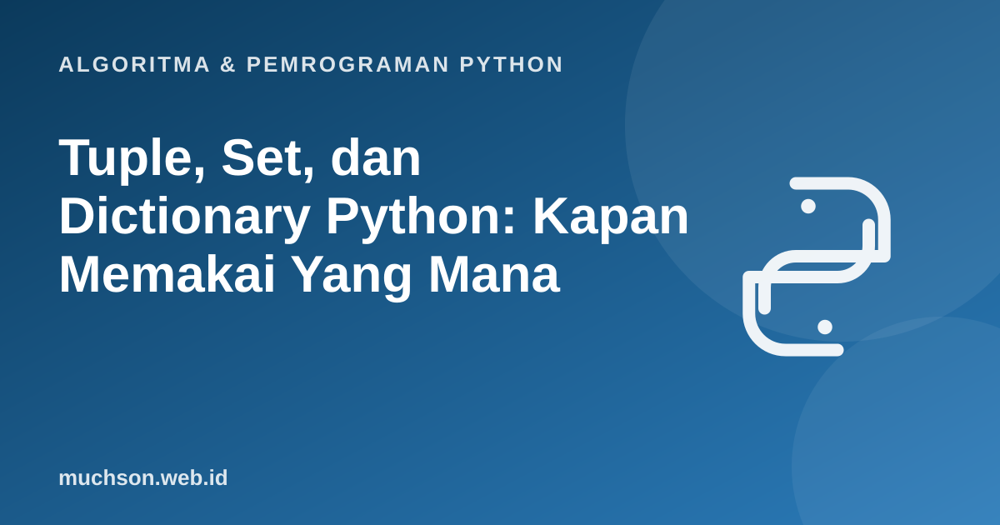

Beranda › Artikel › Algoritma & Pemrograman Python
Algoritma & Pemrograman PythonTuple, Set, dan Dictionary Python: Kapan Memakai Yang Mana
Setelah list, ada tiga struktur data bawaan lain yang menyelesaikan masalah berbeda: tuple untuk data tetap, set untuk keunikan dan operasi himpunan, dan dictionary untuk pencarian berdasarkan kunci. Memilih yang tepat sering mengubah kode lambat menjadi cepat dan kode rumit menjadi sederhana.
Sebaiknya sudah paham: list Python, mutable vs immutable

Setelah membaca dan mencoba materi ini, Anda mampu:
- membuat dan memakai tuple, termasuk unpacking
- memakai set untuk menghilangkan duplikat dan operasi himpunan
- memakai dictionary untuk memetakan kunci ke nilai dan menghitung frekuensi
- menjelaskan mengapa pencarian set dan dict rata-rata O(1)
- memilih struktur data yang tepat untuk suatu masalah
Tuple: urutan yang tidak berubah
titik = (3, 4)
x, y = titik # unpacking
print(x, y, titik[0], len(titik))
satu = (5,) # tuple satu elemen butuh koma
print(type(satu), type((5)))
a, b = 1, 2
a, b = b, a # menukar nilai tanpa variabel bantu
print(a, b)
try:
titik[0] = 9
except TypeError as e:
print("Error:", e)3 4 3 2
<class 'tuple'> <class 'int'>
2 1
Error: 'tuple' object does not support item assignment
Set: kumpulan unik tanpa urutan
angka = [3, 1, 3, 2, 1, 5]
unik = set(angka)
print(unik, len(unik))
unik.add(10); unik.discard(1)
print(3 in unik) # pencarian cepat
A = {1, 2, 3, 4}
B = {3, 4, 5}
print(A | B) # gabungan
print(A & B) # irisan
print(A - B) # selisih
print(A ^ B) # beda simetris{1, 2, 3, 5} 4
True
{1, 2, 3, 4, 5}
{3, 4}
{1, 2}
{1, 2, 5}
Dictionary: kunci ke nilai
siswa = {"nama": "Ani", "umur": 19}
siswa["jurusan"] = "SI" # tambah atau ubah
print(siswa["nama"], siswa.get("alamat", "tidak ada"))
for k, v in siswa.items():
print(k, "=", v)
print("umur" in siswa, list(siswa.keys()))
del siswa["umur"]
print(siswa)Ani tidak ada
nama = Ani
umur = 19
jurusan = SI
True ['nama', 'umur', 'jurusan']
{'nama': 'Ani', 'jurusan': 'SI'}
Pola penting: menghitung frekuensi
teks = "kucing makan ikan lalu kucing tidur lalu kucing bangun"
hitung = {}
for kata in teks.split():
hitung[kata] = hitung.get(kata, 0) + 1
print(hitung)
from collections import Counter
print(Counter(teks.split()).most_common(2))
kuadrat = {x: x * x for x in range(1, 6)} # dict comprehension
print(kuadrat){'kucing': 3, 'makan': 1, 'ikan': 1, 'lalu': 2, 'tidur': 1, 'bangun': 1}
[('kucing', 3), ('lalu', 2)]
{1: 1, 2: 4, 3: 9, 4: 16, 5: 25}
Mengapa pencarian set dan dict begitu cepat?
Keduanya memakai tabel hash: kunci diubah menjadi angka (hash) yang menentukan lokasi penyimpanan, sehingga pencarian rata-rata langsung ke lokasi yang tepat tanpa memeriksa elemen satu per satu. Karena itu kunci dict dan elemen set harus hashable (immutable): list tidak boleh, tuple boleh.
import time
data = list(range(200000))
ss = set(data)
t = time.perf_counter(); 199999 in data; t1 = time.perf_counter() - t
t = time.perf_counter(); 199999 in ss; t2 = time.perf_counter() - t
print("list lebih lambat sekitar", int(t1 / t2) > 100) # biasanya ratusan kalilist lebih lambat sekitar True
Memilih struktur data
| Kebutuhan | Pilih | Alasan |
|---|---|---|
| Urutan yang berubah, boleh duplikat | list | Fleksibel, akses indeks |
| Data tetap (koordinat, record) | tuple | Immutable, bisa jadi kunci |
| Elemen unik dan pemeriksaan keanggotaan cepat | set | Hash, operasi himpunan |
| Cari nilai berdasarkan kunci | dict | Pencarian O(1) rata-rata |
| Antrean masuk-keluar dari ujung | collections.deque | O(1) di kedua ujung |
1. Diberi list nama dengan duplikat, tampilkan jumlah nama unik.
len(set(nama))2. Tulis program yang mengelompokkan kata berdasarkan panjangnya ke dalam dict: {3: ["aku", "dia"], 4: [...]}.
g = {}
for k in kata:
g.setdefault(len(k), []).append(k)3. Periksa apakah dua list memiliki elemen yang sama (tanpa peduli urutan atau duplikat).
set(a) == set(b)4. Mengapa {[1, 2]: "a"} menimbulkan TypeError?
- Tuple immutable; cocok untuk data tetap dan kunci dict.
- Set menyimpan elemen unik dengan pemeriksaan keanggotaan cepat dan operasi himpunan (| & - ^).
- Dict memetakan kunci ke nilai; get(), items(), setdefault(), Counter memudahkan pola umum.
- Set dan dict berbasis hash: pencarian rata-rata O(1), kunci harus hashable.
Tanya jawab
Apakah dictionary Python berurutan?
Apa bedanya set dan frozenset?
Kapan memakai defaultdict?
defaultdict(list) membuat list kosong otomatis.Referensi
- Dokumentasi Python: Data Structures (tuple, set, dictionary)
- Dokumentasi Python: collections (Counter, defaultdict, deque)
- Python Wiki: TimeComplexity
- MIT OpenCourseWare 6.0001: Introduction to Computer Science and Programming in Python